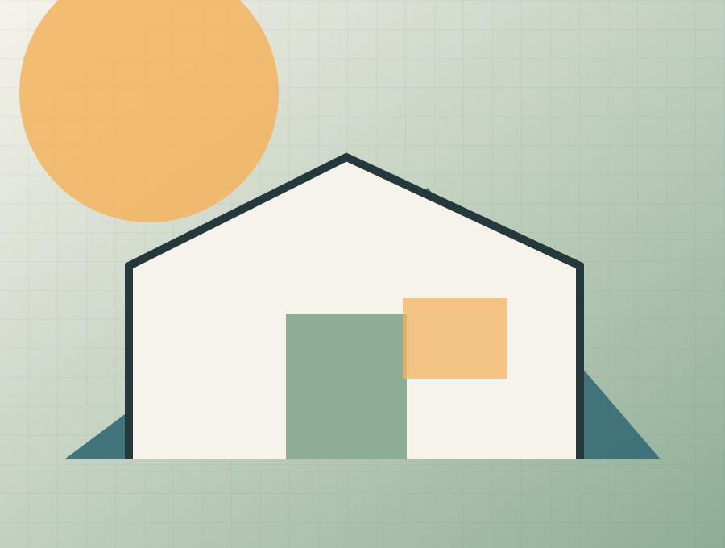

Oldalösszefoglaló
Elérhetőségek, rövid bemutatkozás, barátságos ügyfélszolgálati fotó. Lead form. CTA: "Kérjen ajánlatot".
Praktikus, fenntartható, könnyen finanszírozható otthonok. A kapcsolat / ajánlatkérés célja, hogy a látogató egyértelmű szempontokkal jusson el a következő megalapozott döntésig.
Otthon – egyszerűen.
Drive-forráshoz igazított tesztoldal · publikálás nélkül
Praktikus, fenntartható, könnyen finanszírozható otthonok.
Elérhetőségek, rövid bemutatkozás, barátságos ügyfélszolgálati fotó. Lead form. CTA: "Kérjen ajánlatot".
Ez a specifikáció egy egyszerű, praktikus, családbarát és megfizethető Everyday Homes weboldalt ír le, ahol a fő cél az, hogy gyorsan és érthetően vezesse a látogatót a döntésig.
A preview nem küld adatot és nem tesz ajánlatot. Ár, határidő, garancia vagy szerződéses vállalás csak jóváhagyott evidence- és ajánlati rekord alapján jelenhet meg élesben.